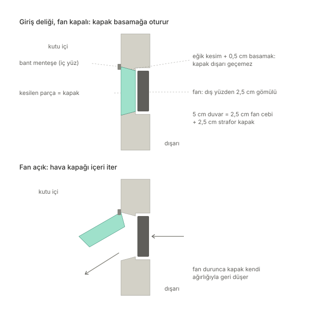

Kutuya dış havayı alabilmek için bir fan deliği açmam gerekiyor. Sorun şu: fan çalışmadığında o delik kutunun en zayıf noktası olur. Kutu odadan soğukken soğuk hava ağır olduğu için özellikle alttaki delikten dışarı kaçar. Hazır geri tepme klapeleri pahalı olduğu için kendi kapağımı tasarladım.

Fikir: duvarın kendisi kapak olsun
Duvar 5 cm kalınlığında strafor. Fanın takılacağı yüzden 2,5 cm derinliğinde, fanın ölçüsünde bir cep oyuyorum ve fanı bu cebe gömüyorum. Geriye kalan 2,5 cm'lik strafor tabakasını kesip kapak yapıyorum. Fan üfleyince bu parça kutunun içine doğru açılıyor, fan durunca geri düşüp yerine oturuyor. Kapandığında duvar düz görünüyor ve kapak 2,5 cm strafor olduğu için yalıtım da bozulmuyor.
Sızdırmazlık: eğik kesim
Düz bir kesimde bıçağın açtığı ince boşluktan hava kaçar ve kapak iki yöne de geçebilir. Bu yüzden kesimi eğik yapıyorum: kesim, kapağın açılacağı yöne doğru genişliyor. Kapak bir şişe tıpası gibi çalışıyor. Bir yöne rahatça açılıyor, ters yöne geçemiyor ve kapanırken kendi eğimine oturuyor.
- Kapağın dar yüzü fan cebinden her kenarda yaklaşık 0,5 cm küçük. Aradaki basamak kapağın oturduğu yer.
- Menteşe üst kenarda ve kapağın açıldığı yüzde, kumaş banttan. Strafor bükülmez, kırılır; bant ise esniyor ve üst kenarı da kapatıyor.
- Kapak kapandığında hava kaçırırsa eğimli yüzeye 1–2 mm'lik ince köpük bant yapıştıracağım.
Giriş ve çıkış
Giriş deliğinde fan dış yüzde, kapak içeri açılıyor. Egzoz deliği gerekirse bunun aynası olacak: fan iç yüzde, kapak dışarı açılıyor, kesim dışa doğru genişliyor. Şimdilik tek bir 8 cm turbo fanla deneyeceğim; güçlü olduğu için kapağı rahatça iter. Fanın jetini doğrudan soğanlara tutmayacağım.
Mıknatısla kapatmayı da düşündüm ama vazgeçtim: fanların itme gücü çok düşük ve küçük bir mıknatıs bile kapağın açılmasını engelleyebilir.